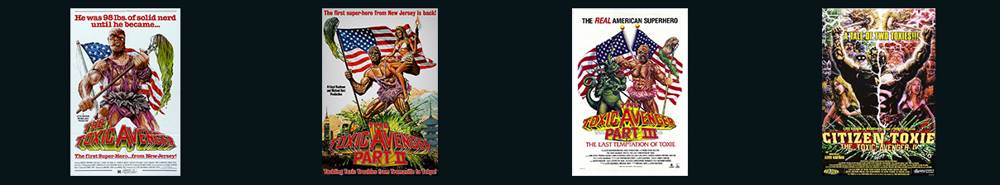

The toxic Avenger o “El vengador tóxico” en su versión en español, es una película que se estrenó en 1984, dirigida por Michael Herz y Lloyd Kaufman y escrita por Joe Ritter y Kaufman.
La película fue producida por Troma Entertainment, una productora conocida por realizar películas de bajo presupuesto y que se terminó de asentar en el mundillo del cine luego de que el film se convirtiera en un ícono del cine de culto.
Todo transcurre en Tromaville, New Jersey, también conocida como la capital mundial de los residuos tóxicos.
La ciudad está liderada por un alcalde corrupto e incompetente y llena de jóvenes vándalos que disfrutan de golpear inocentes e instalar el caos.
Allí vive Melvin Junko (A.K.A The toxic Avenger o “Toxie”, como prefieren llamarlo los fans), un muchacho enclenque blanco de innumerables bromas pesadas.
Un día que como cualquier otro, Melvin se encuentra en su puesto de trabajo, limpiando el gimnasio local, cuando un grupo de jóvenes comienza a acosarlo.
Mientras Melvin intenta huir de la situación, termina cayendo por una ventana y zambullido en un tanque de desperdicios tóxicos. Allí adquiere poderes especiales pero queda terriblemente deformado. Después de aquello, no tarda mucho en convertirse en El vengador Tóxico, el único que se anima a combatir el crimen en Tromaville.
En la actualidad, Simon Delacroix, un músico francés, productor de música electrónica de género Electro-Trash/Emotronica bajo el pseudónimo de The Toxic Avenger, reconocido por un sonido punk ochentoso y por ocultar su rostro usando la famosa mascara de Sgt. Kabukiman, otro personaje de Troma Entertainment.
Durante la filmación de una de las escenas en los callejones, un indigente se robó una pistola de utilería e intentó asaltar a los miembros de la producción con ella.
Los planos con el camión que transporta los residuos casi no terminan bien debido a que varios motociclistas que observaron al camión dirigiéndose a la localización llamaron a la policía pensando que eran residuos reales.
Lloyd Kaufman logró engañar al mismísimo ejército para que facilitasen los tanques y personal militar del final. Para ello reescribió todo el guión transformándolo favorablemente pro-ejército.
En el Independent del Reino Unido, nos compartieron que la cinta es "un viaje alucinante", además de que "es probable deje a los espectadores alegres con una sobrecarga sensorial o bien, rascándose la cabeza".
En la escena en la que el policía quema sus manos al tocar a Melvin, el actor Mark Torgyl acabó prendiéndose fuego sin querer, lo cual provocó quemaduras leves en la cabeza del actor.
Aunque al principio no podían encontrar cines que quisieran exhibir la película, tras una serie de proyecciones en los ciclos de medianoche de New York’s Bleecker Street Cinemas, y luego de ganar allí una legión de fans, se convirtió en una película de culto que obtuvo tres secuelas, de las cuales, la segunda y la tercera, fueron pensadas como una sola película, pero que, tras ver los directores la gran cantidad de metraje rodado que tenían, decidieron dividirlo en dos entregas.
En 2014 se dio a conocer que Lloyd Kauffman y Michael Herz estaban trabajando en una remake de The toxic Avenger. En septiembre de 2016 , Conrad Vernon, co-director de “Shrek II” y “La fiesta de las salchichas”, ha firmado contrato para dirigir esta remake, aún sin fecha de estreno.
